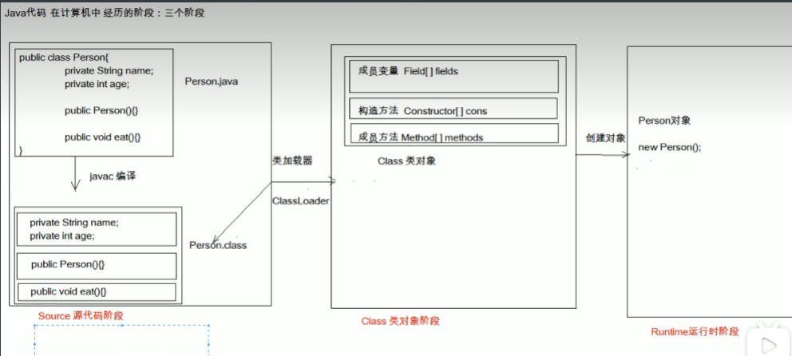

# 类加载器
# 类加载
- 类加载的描述
- 当程序要使用某个类时，如果该类还未被加载到内存中，则系统会通过类的加载，类的连接，类的初始化这三个步骤来对类进行初始化。如果不出现意外情况，JVM 将会连续完成这三个步骤，所以有时也把这三个步骤统称为类加载或者类初始化
- 类的加载
- 就是指将 class 文件读入内存，并为之创建一个 java.lang.Class 对象
- 任何类被使用时，系统都会为之建立一个 java.lang.Class 对象
- 类的连接
- 验证阶段：用于检验被加载的类是否有正确的内部结构，并和其他类协调一致
- 准备阶段：负责为类的类变量分配内存，并设置默认初始化值
- 解析阶段：将类的二进制数据中的符号引用替换为直接引用
- 类的初始化
- 在该阶段，主要就是对类变量进行初始化
- 类的初始化步骤
- 假如类还未被加载和连接，则程序先加载并连接该类
- 假如该类的直接父类还未被初始化，则先初始化其直接父类
- 假如类中有初始化语句，则系统依次执行这些初始化语句
- 注意：在执行第 2 个步骤的时候，系统对直接父类的初始化步骤也遵循初始化步骤 1-3
- 类的初始化时机
- 创建类的实例
- 调用类的类方法
- 访问类或者接口的类变量，或者为该类变量赋值
- 使用反射方式来强制创建某个类或接口对应的 java.lang.Class 对象
- 初始化某个类的子类
- 直接使用 java.exe 命令来运行某个主类
# 类加载器的作用
- 负责将.class 文件加载到内存中，并为之生成对应的 java.lang.Class 对象。虽然我们不用过分关心类加载机制，但是了解这个机制我们就能更好的理解程序的运行！
# JVM 的类加载机制
- 全盘负责：就是当一个类加载器负责加载某个 Class 时，该 Class 所依赖的和引用的其他 Class 也将由该类加载器负责载入，除非显示使用另外一个类加载器来载入
- 父类委托：就是当一个类加载器负责加载某个 Class 时，先让父类加载器试图加载该 Class，只有在父类加载器无法加载该类时才尝试从自己的类路径中加载该类
- 缓存机制：保证所有加载过的 Class 都会被缓存，当程序需要使用某个 Class 对象时，类加载器先从缓存区中搜索该 Class，只有当缓存区中不存在该 Class 对象时，系统才会读取该类对应的二进制数据，并将其转换成 Class 对象，存储到缓存区
# Java 中的内置类加载器
- Bootstrap class loader：它是虚拟机的内置类加载器，通常表示为 null ，并且没有父 null
- Platform class loader：平台类加载器可以看到所有平台类 ，平台类包括由平台类加载器或其祖先定义的 Java SE 平台 API，其实现类和 JDK 特定的运行时类
- System class loader：它也被称为应用程序类加载器 ，与平台类加载器不同。 系统类加载器通常用于定义应用程序类路径，模块路径和 JDK 特定工具上的类
- 类加载器的继承关系：System 的父加载器为 Platform，而 Platform 的父加载器为 Bootstrap
# ClassLoader 中的两个方法
方法分类
方法名 说明 static ClassLoader getSystemClassLoader() 返回用于委派的系统类加载器 ClassLoader getParent() 返回父类加载器进行委派 示例代码
public class ClassLoaderDemo {
public static void main(String[] args) {
//static ClassLoader getSystemClassLoader ()：返回用于委派的系统类加载器ClassLoader c = ClassLoader.getSystemClassLoader();
System.out.println(c); //AppClassLoader
//ClassLoader getParent ()：返回父类加载器进行委派ClassLoader c2 = c.getParent();
System.out.println(c2); //PlatformClassLoader
ClassLoader c3 = c2.getParent();
System.out.println(c3); //null
}}
# 反射
# 概述
框架设计的灵魂
框架：简化编码
反射：将类的各个部分封装为其他对象，这就是反射机制
好处：程序运行过程中，操作这些对象
可以解耦，提高扩展性。

# 获取 Class 类对象的三种方式
三种方式分类
- 类名.class 属性
- 对象名.getClass () 方法
- Class.forName (全类名) 方法
public class ReflectDemo { | |
public static void main(String[] args) throws ClassNotFoundException { | |
// 使用类的 class 属性来获取该类对应的 Class 对象 | |
Class<Student> c1 = Student.class; | |
System.out.println(c1); | |
Class<Student> c2 = Student.class; | |
System.out.println(c1 == c2); | |
System.out.println("--------"); | |
// 调用对象的 getClass () 方法，返回该对象所属类对应的 Class 对象 | |
Student s = new Student(); | |
Class<? extends Student> c3 = s.getClass(); | |
System.out.println(c1 == c3); | |
System.out.println("--------"); | |
// 使用 Class 类中的静态方法 forName (String className) | |
Class<?> c4 = Class.forName("com.itheima_02.Student"); | |
System.out.println(c1 == c4); | |
} | |
} |
# 反射获取构造方法并使用
# Class 类获取构造方法对象的方法
方法分类
方法名 说明 Constructor<?>[] getConstructors() 返回所有公共构造方法对象的数组 Constructor<?>[] getDeclaredConstructors() 返回所有构造方法对象的数组 Constructor<T> getConstructor(Class<?>... parameterTypes) 返回单个公共构造方法对象 Constructor<T> getDeclaredConstructor(Class<?>... parameterTypes) 返回单个构造方法对象 示例代码
public class ReflectDemo01 {
public static void main(String[] args) throws ClassNotFoundException, NoSuchMethodException, IllegalAccessException, InvocationTargetException, InstantiationException {
// 获取 Class 对象Class<?> c = Class.forName("com.itheima_02.Student");
//Constructor<?>[] getConstructors () 返回一个包含 Constructor 对象的数组， Constructor 对象反映了由该 Class 对象表示的类的所有公共构造函数// Constructor<?>[] cons = c.getConstructors();//Constructor<?>[] getDeclaredConstructors () 返回反映由该 Class 对象表示的类声明的所有构造函数的 Constructor 对象的数组Constructor<?>[] cons = c.getDeclaredConstructors();
for(Constructor con : cons) {
System.out.println(con);
}System.out.println("--------");
//Constructor<T> getConstructor (Class<?>... parameterTypes) 返回一个 Constructor 对象，该对象反映由该 Class 对象表示的类的指定公共构造函数//Constructor<T> getDeclaredConstructor (Class<?>... parameterTypes) 返回一个 Constructor 对象，该对象反映由此 Class 对象表示的类或接口的指定构造函数// 参数：你要获取的构造方法的参数的个数和数据类型对应的字节码文件对象Constructor<?> con = c.getConstructor();
//Constructor 提供了一个类的单个构造函数的信息和访问权限//T newInstance (Object... initargs) 使用由此 Constructor 对象表示的构造函数，使用指定的初始化参数来创建和初始化构造函数的声明类的新实例Object obj = con.newInstance();
System.out.println(obj);
// Student s = new Student();// System.out.println(s);}}
# Constructor 类用于创建对象的方法
| 方法名 | 说明 |
|---|---|
| T newInstance(Object...initargs) | 根据指定的构造方法创建对象 |
# 反射获取构造方法并使用练习 1
案例需求
- 通过反射获取公共的构造方法并创建对象
代码实现
学生类
public class Student {
// 成员变量：一个私有，一个默认，一个公共private String name;
int age;
public String address;
// 构造方法：一个私有，一个默认，两个公共public Student() {
}private Student(String name) {
this.name = name;
}Student(String name, int age) {
this.name = name;
this.age = age;
}public Student(String name, int age, String address) {
this.name = name;
this.age = age;
this.address = address;
}// 成员方法：一个私有，四个公共private void function() {
System.out.println("function");
}public void method1() {
System.out.println("method");
}public void method2(String s) {
System.out.println("method:" + s);
}public String method3(String s, int i) {
return s + "," + i;
}@Overridepublic String toString() {
return "Student{" +
"name='" + name + '\'' +
", age=" + age +
", address='" + address + '\'' +
'}';
}}测试类
public class ReflectDemo02 {
public static void main(String[] args) throws ClassNotFoundException, NoSuchMethodException, IllegalAccessException, InvocationTargetException, InstantiationException {
// 获取 Class 对象Class<?> c = Class.forName("com.itheima_02.Student");
//public Student(String name, int age, String address)//Constructor<T> getConstructor(Class<?>... parameterTypes)Constructor<?> con = c.getConstructor(String.class, int.class, String.class);
// 基本数据类型也可以通过.class 得到对应的 Class 类型//T newInstance(Object... initargs)Object obj = con.newInstance("林青霞", 30, "西安");
System.out.println(obj);
}}
# 反射获取构造方法并使用练习 2
案例需求
- 通过反射获取私有构造方法并创建对象
代码实现
学生类：参见上方学生类
测试类
public class ReflectDemo03 {
public static void main(String[] args) throws ClassNotFoundException, NoSuchMethodException, IllegalAccessException, InvocationTargetException, InstantiationException {
// 获取 Class 对象Class<?> c = Class.forName("com.itheima_02.Student");
//private Student(String name)//Constructor<T> getDeclaredConstructor(Class<?>... parameterTypes)Constructor<?> con = c.getDeclaredConstructor(String.class);
// 暴力反射//public void setAccessible (boolean flag): 值为 true，取消访问检查con.setAccessible(true);
Object obj = con.newInstance("林青霞");
System.out.println(obj);
}}
# 反射获取成员变量并使用
# Class 类获取成员变量对象的方法
方法分类
方法名 说明 Field[] getFields() 返回所有公共成员变量对象的数组 Field[] getDeclaredFields() 返回所有成员变量对象的数组 Field getField(String name) 返回单个公共成员变量对象 Field getDeclaredField(String name) 返回单个成员变量对象 示例代码
public class ReflectDemo01 {
public static void main(String[] args) throws ClassNotFoundException, NoSuchFieldException, NoSuchMethodException, IllegalAccessException, InvocationTargetException, InstantiationException {
// 获取 Class 对象Class<?> c = Class.forName("com.itheima_02.Student");
//Field [] getFields () 返回一个包含 Field 对象的数组， Field 对象反映由该 Class 对象表示的类或接口的所有可访问的公共字段//Field [] getDeclaredFields () 返回一个 Field 对象的数组，反映了由该 Class 对象表示的类或接口声明的所有字段// Field[] fields = c.getFields();Field[] fields = c.getDeclaredFields();
for(Field field : fields) {
System.out.println(field);
}System.out.println("--------");
//Field getField (String name) 返回一个 Field 对象，该对象反映由该 Class 对象表示的类或接口的指定公共成员字段//Field getDeclaredField (String name) 返回一个 Field 对象，该对象反映由该 Class 对象表示的类或接口的指定声明字段Field addressField = c.getField("address");
// 获取无参构造方法创建对象Constructor<?> con = c.getConstructor();
Object obj = con.newInstance();
// obj.addressField = "西安";//Field 提供有关类或接口的单个字段的信息和动态访问//void set (Object obj, Object value) 将指定的对象参数中由此 Field 对象表示的字段设置为指定的新值addressField.set(obj,"西安"); // 给 obj 的成员变量 addressField 赋值为西安
System.out.println(obj);
// Student s = new Student();// s.address = "西安";// System.out.println(s);}}
# Field 类用于给成员变量赋值的方法
| 方法名 | 说明 |
|---|---|
| voidset(Object obj,Object value) | 给 obj 对象的成员变量赋值为 value |
# 反射获取成员变量并使用练习
案例需求
- 通过反射获取成员变量并赋值
代码实现
学生类：参见上方学生类
测试类
public class ReflectDemo02 {
public static void main(String[] args) throws Exception {
// 获取 Class 对象Class<?> c = Class.forName("com.itheima_02.Student");
//Student s = new Student();Constructor<?> con = c.getConstructor();
Object obj = con.newInstance();
System.out.println(obj);
//s.name = "林青霞";// Field nameField = c.getField("name"); //NoSuchFieldException: nameField nameField = c.getDeclaredField("name");
nameField.setAccessible(true);
nameField.set(obj, "林青霞");
System.out.println(obj);
//s.age = 30;Field ageField = c.getDeclaredField("age");
ageField.setAccessible(true);
ageField.set(obj,30);
System.out.println(obj);
//s.address = "西安";Field addressField = c.getDeclaredField("address");
addressField.setAccessible(true);
addressField.set(obj,"西安");
System.out.println(obj);
}}
# 反射获取成员方法并使用
# Class 类获取成员方法对象的方法
方法分类
方法名 说明 Method[] getMethods() 返回所有公共成员方法对象的数组，包括继承的 Method[] getDeclaredMethods() 返回所有成员方法对象的数组，不包括继承的 Method getMethod(String name, Class<?>... parameterTypes) 返回单个公共成员方法对象 Method getDeclaredMethod(String name, Class<?>... parameterTypes) 返回单个成员方法对象 示例代码
public class ReflectDemo01 {
public static void main(String[] args) throws Exception {
// 获取 Class 对象Class<?> c = Class.forName("com.itheima_02.Student");
//Method [] getMethods () 返回一个包含 方法对象的数组， 方法对象反映由该 Class 对象表示的类或接口的所有公共方法，包括由类或接口声明的对象以及从超类和超级接口继承的类//Method [] getDeclaredMethods () 返回一个包含 方法对象的数组， 方法对象反映由 Class 对象表示的类或接口的所有声明方法，包括 public，protected，default（package）访问和私有方法，但不包括继承方法// Method[] methods = c.getMethods();Method[] methods = c.getDeclaredMethods();
for(Method method : methods) {
System.out.println(method);
}System.out.println("--------");
//Method getMethod (String name, Class<?>... parameterTypes) 返回一个 方法对象，该对象反映由该 Class 对象表示的类或接口的指定公共成员方法//Method getDeclaredMethod (String name, Class<?>... parameterTypes) 返回一个 方法对象，它反映此表示的类或接口的指定声明的方法 Class 对象//public void method1()Method m = c.getMethod("method1");
// 获取无参构造方法创建对象Constructor<?> con = c.getConstructor();
Object obj = con.newInstance();
// obj.m();// 在类或接口上提供有关单一方法的信息和访问权限//Object invoke (Object obj, Object... args) 在具有指定参数的指定对象上调用此 方法对象表示的基础方法//Object：返回值类型//obj：调用方法的对象//args：方法需要的参数m.invoke(obj);
// Student s = new Student();// s.method1();}}
# Method 类用于执行方法的方法
| 方法名 | 说明 |
|---|---|
| Objectinvoke(Object obj,Object... args) | 调用 obj 对象的成员方法，参数是 args, 返回值是 Object 类型 |
# 反射获取成员方法并使用练习
案例需求
- 通过反射获取成员方法并调用
代码实现
学生类：参见上方学生类
测试类
public class ReflectDemo02 {
public static void main(String[] args) throws Exception {
// 获取 Class 对象Class<?> c = Class.forName("com.itheima_02.Student");
//Student s = new Student();Constructor<?> con = c.getConstructor();
Object obj = con.newInstance();
//s.method1();Method m1 = c.getMethod("method1");
m1.invoke(obj);
//s.method2 ("林青霞");Method m2 = c.getMethod("method2", String.class);
m2.invoke(obj,"林青霞");
// String ss = s.method3 ("林青霞",30);// System.out.println(ss);Method m3 = c.getMethod("method3", String.class, int.class);
Object o = m3.invoke(obj, "林青霞", 30);
System.out.println(o);
//s.function();// Method m4 = c.getMethod("function"); //NoSuchMethodException: com.itheima_02.Student.function()Method m4 = c.getDeclaredMethod("function");
m4.setAccessible(true);
m4.invoke(obj);
}}
# 反射的案例
# 反射练习之越过泛型检查
案例需求
- 通过反射技术，向一个泛型为 Integer 的集合中添加一些字符串数据
代码实现
public class ReflectTest01 {
public static void main(String[] args) throws Exception {
// 创建集合ArrayList<Integer> array = new ArrayList<Integer>();
// array.add(10);// array.add(20);// array.add("hello");Class<? extends ArrayList> c = array.getClass();
Method m = c.getMethod("add", Object.class);
m.invoke(array,"hello");
m.invoke(array,"world");
m.invoke(array,"java");
System.out.println(array);
}}
# 运行配置文件中指定类的指定方法
案例需求
- 通过反射运行配置文件中指定类的指定方法
代码实现
public class ReflectTest02 {
public static void main(String[] args) throws Exception {
// 加载数据Properties prop = new Properties();
FileReader fr = new FileReader("myReflect\\class.txt");
prop.load(fr);
fr.close();
/*className=com.itheima_06.Student
methodName=study
*/
String className = prop.getProperty("className");
String methodName = prop.getProperty("methodName");
// 通过反射来使用Class<?> c = Class.forName(className);//com.itheima_06.Student
Constructor<?> con = c.getConstructor();
Object obj = con.newInstance();
Method m = c.getMethod(methodName);//study
m.invoke(obj);
}}
# @注解名称
JDK 中预定得到一些注解 @Override @Deprecated @SupppressWarnings
自定义注解
在程序使用注解
# 模块化
# 模块化概述
Java 语言随着这些年的发展已经成为了一门影响深远的编程语言，无数平台，系统都采用 Java 语言编写。但是，伴随着发展，Java 也越来越庞大，逐渐发展成为一门 “臃肿” 的语言。而且，无论是运行一个大型的软件系统，还是运行一个小的程序，即使程序只需要使用 Java 的部分核心功能， JVM 也要加载整个 JRE 环境。
为了给 Java “瘦身”，让 Java 实现轻量化，Java 9 正式的推出了模块化系统。Java 被拆分为 N 多个模块，并允许 Java 程序可以根据需要选择加载程序必须的 Java 模块，这样就可以让 Java 以轻量化的方式来运行
其实，Java 7 的时候已经提出了模块化的概念，但由于其过于复杂，Java 7，Java 8 都一直未能真正推出，直到 Java 9 才真正成熟起来。对于 Java 语言来说，模块化系统是一次真正的自我革新，这种革新使得 “古老而庞大” 的 Java 语言重新焕发年轻的活力